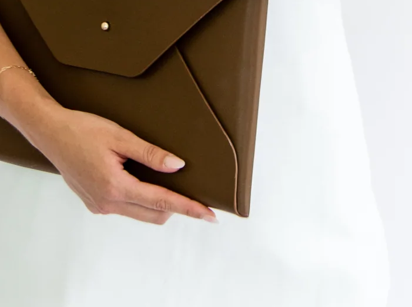
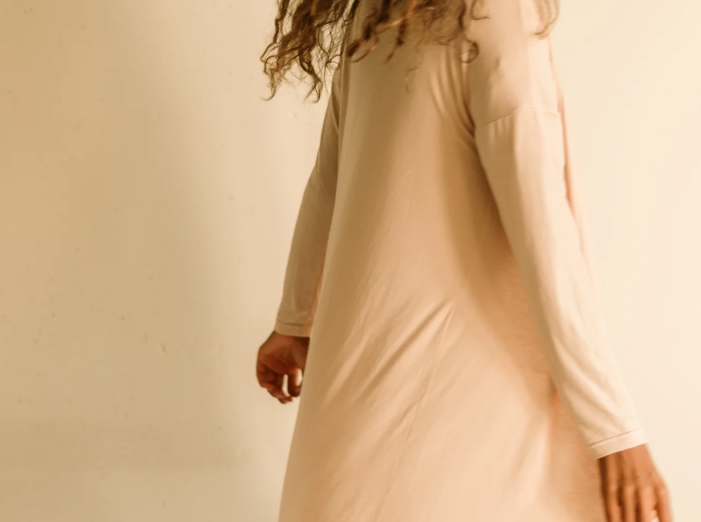
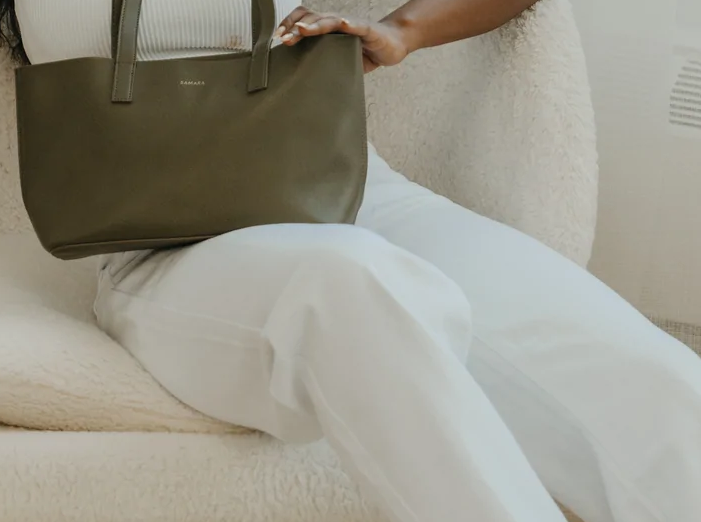
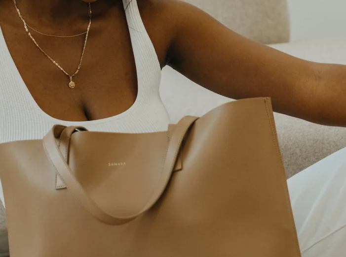
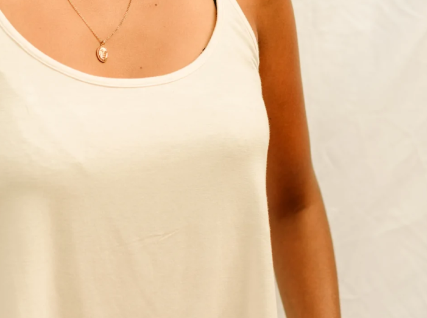

Apple Leather
1.Samara

The Laptop Sleeve
The Bamboo Cardi
The Tote
The Bamboo Cardi
The Tote



One of the first to use apple skin leather, this brand has a gorgeous collection featuring the material. Their crossbody bag, tote, laptop case and mini pouches all look as delicious as the apples they came from and are made ethically. The brand avoids synthetic PVC and makes use of more sustainable materials as much as possible.
Samara is also completely woman-led, with a portion of brand profits supporting a non-for-profit cause close to co-founder Salima’s heart.
Samara is also completely woman-led, with a portion of brand profits supporting a non-for-profit cause close to co-founder Salima’s heart.
The Relaxed Bamboo Tank
